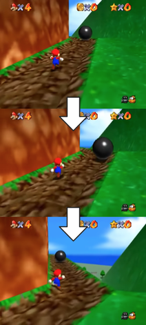

Gameplay
From left to right clockwise, the interface shows the number of extra lives, health points remaining, coins obtained, Power Stars collected throughout the game, and the camera configuration. The three screenshots show the camera automatically rotating to show the path.
Controls
Super Mario 64 is a 3D platformer in which the player controls the titular character Mario through various courses. Mario's abilities are far more diverse than in previous games. He can walk, run, jump, crouch, crawl, climb, swim, kick, grab objects, and punch using the game controller's analog stick and buttons. He can execute special jumps by combining a regular jump with other actions, including the double and triple jumps, long jump, backflip, and wall jump. The player can adjust the camera—operated by a Lakitu broadcasting Mario—and toggle between first-person and third-person view.
Health, Lives and Power-Ups
Unlike many of its predecessors, Super Mario 64 uses a health point system, represented by a pie shape consisting of eight segments. If Mario has taken damage, he can replenish his health either by collecting three types of coins—yellow, which replenishes one segment; red, equal to two yellow coins and which replenishes two segments; and blue, equal to five yellow coins and which replenishes five segments, by walking through a spinning heart or by jumping into water. Underwater, Mario's health instead represents how long he can hold his breath, slowly diminishing while underwater and replenishing when he surfaces. Finishing a course grants Mario an extra life for every 50 yellow coins the player collected, and extra life mushrooms are hidden in various places such as trees and poles - they may either chase Mario through the air or fall to the ground and disappear shortly if not collected.
In absence of the power-ups normally found in previous games, such as the Super Mushroom and Fire Flower, three colors of translucent blocks—red, green, and blue—appear throughout many stages. Three switches of the same colors, found in three secret areas located in either stages or the castle itself, turn their corresponding blocks solid and permanently allow Mario to obtain three types of special cap power-ups throughout all of the stages. The Wing Cap allows Mario to fly after doing a triple jump or being shot from a cannon; the Metal Cap makes him immune to enemies, fire, noxious gases, allows him to withstand wind and water currents, perform on-land moves underwater, and have unlimited air capacity underwater; and the Vanish Cap renders him partially immaterial and invulnerable, and allows him to walk through some obstacles. Another implicit powerup is the shell remains after stomping a Koopa Troopa, which Mario can use to run over enemies, and surf on water, lava, and quicksand.
Setting and Objective
The hub world takes place in Princess Peach's Castle, which consists of three floors consisting of the castle's lobby, the main tower, and a basement, plus a moat and a courtyard outside the castle. The player's main objective is to look for paintings that, when jumped into, bring them into courses containing Power Stars, which upon their collection unlock more of the castle hub world. Each of the fifteen courses has seven Power Stars (six from named missions and one gained by collecting 100 coins in the level), and an additional fifteen are hidden as secrets and as bonuses, for a total of 120 Power Stars in the game.
The courses are filled with enemies as well as friendly creatures that provide assistance or ask favors, such as Bob-omb Buddies, who will allow Mario to access cannons on request. Some Power Stars only appear after completing certain tasks, often hinted at by the name of the course. These challenges include collecting one hundred yellow coins or eight red coins on a stage, defeating a boss, racing an opponent, and solving puzzles. The final level of the game is blocked by "endless stairs" similar to the Penrose stairs concept, but Mario can bypass them by collecting seventy Power Stars. The music in the endless stairs before collecting seventy Power Stars resembles a Shepard scale. There are many hidden mini-courses and other secrets within the castle, which may contain extra Power Stars required for the full completion of the game. If the player returns to the game after collecting all 120 Power Stars, Yoshi can be found on the roof of Princess Peach's Castle, who will give the player a message from the developers, accompanied by one hundred extra lives and an improved triple jump.